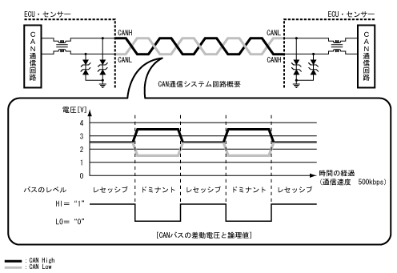

| CAN通信システム |
| ● |
通信回路によってデジタル信号に変換された複数項目の情報やデータを，一対の通信線（ツイストペア結線）で伝送するCAN*
1[ISO11898]通信システムを採用しました。これにより，入力系（センサー・スイッチなど）・制御ユニット・出力系（モーターなど）をそれぞれ結ぶシステムに対して，ワイヤハーネスの削減および電子制御システムのスリム化をはかりました。
|
| ● |
| 参 考 |
|  |
 CAN通信ネットワーク CAN通信ネットワーク
|
| CAN通信システム構成
|
| CAN通信プロトコル（通信規則）
|